엑셀 사용법 (퀴즈 대비)
피벗 · 조회·요약 함수 · 추세선 · 해 찾기
연습 파일: 마케팅_엑셀_연습.xlsx
수업 엑셀 파일별로 수업에서 한 것
- 연습용 파일: 마케팅_엑셀_연습.xlsx (수업 파일 합본, 노란 칸 채우기, 마지막 시트에 정답)
| 파일 (강) | 수업에서 한 것 | 연습 시트 |
| PARETO1 (2강) | 피벗: 매장별 매출 + 열 합계 비율, 월별 매출, 제품별 상위 80% 값 필터, 월×매장 + Product 슬라이서 | 2_PARETO |
| BakeryData (2강) | 피벗: 요일별 평균 (합계→평균, 제품마다), promotion 행 + 요일 슬라이서, 날짜 그룹 월/연 | 7_Bakery피벗 |
| espn (2강) | 피벗: Age 개수 + 그룹(8, 간격 10), Income 그룹(간격 25, 단위 천 달러), Gender 열 + 행 합계 비율, Location | 3_ESPN |
| Chapter3BakeryData (3강) | E·F열 WEEKDAY + VLOOKUP 요일, N·O열 MONTH + VLOOKUP, H7:L10 요약 통계, R11:R12 LARGE/SMALL, R15:R19 ±2σ COUNTIF, R23:R26 프로모션·122개 초과 날 수, COUNTIFS, Q31:V38 요일별 COUNTIF/SUMIF/평균/RANK, N9 INDEX·R62 MATCH 소개 / Q57 월별 표는 숙제 | 1_Bakery |
| Sep_23_2026 Sheet1 (4강) | E4:F5 두 번째 점 → 분산형 + 선형 추세선, K3 a를 목표값 찾기로 (K5 = 500), K7:K17 거듭제곱 수요표 | 4_수요곡선 |
| Sep_23_2026 Sheet2 (4강) | G1에 이름 Elas, 두 번째 점 + 추세선, G9 수요식, G11 면도기 이익 → 해 찾기 GRG, G14:G16 날 이익·총이익·날 개수 → 목표 G15로 다시 | 5_면도기 |
| Verizon_Bundle (5강) | D:J 잉여, K MAX, L MATCH(0), M HLOOKUP 매출, P10:P17 COUNTIF, M3 총매출 → 해 찾기 Evolutionary, O69:Q82 벌점 → M3에 −500×벌점 | 6_Verizon |
| Station (숙제 1) | 수업에서는 안 함, 피벗 토글의 비율 세 가지·행에 필드 두 개·필터 참고 | — |
- 숙제 2(돼지갈비, 날 가격)는 4강 면도기 파일과 같은 구조 → 차트·추세선·해 찾기 토글 참고
기본 조작
| 하고 싶은 것 | 방법 |
| 열 끝까지 선택 | Ctrl+Shift+↓ (함수 괄호 안에서 범위 고를 때 계속 씀) |
| 아래로 끝까지 수식 복사 | 셀 오른쪽 아래 모서리 더블클릭 |
| 참조 고정 | F4: $H$12 → H$12 → $H12 → H12 순환 |
| 범위에 이름 붙이기 | 범위 선택 → 왼쪽 위 이름 상자에 Cake 입력 → Enter |
| 소수 자릿수 | 홈 탭 → 자릿수 늘림/줄임 |
- 이름 붙인 범위는 끌어서 복사해도 안 움직임 ($ 안 붙여도 됨)
- 함정: 그래서
=MODE(Cake)를 오른쪽으로 끌면 다른 제품 칸도 계속 Cake (수업에서 실제로 나옴) → 제품별로 옆으로 끌 땐H12:H1106같은 일반 범위로
- 함수 이름 일부 치고 Tab → 이름과 여는 괄호가 같이 들어감 / Shift+클릭 = 여러 칸 선택
- 교수님이 수업 중 실수한 것: 수요표 만들 때 a와 탄력성 셀을 고정 안 해서 아래로 끌자 값이 틀어짐 → 바뀌어야 하는 건 가격뿐, 나머지 상수 셀은 $로 고정
피벗 테이블
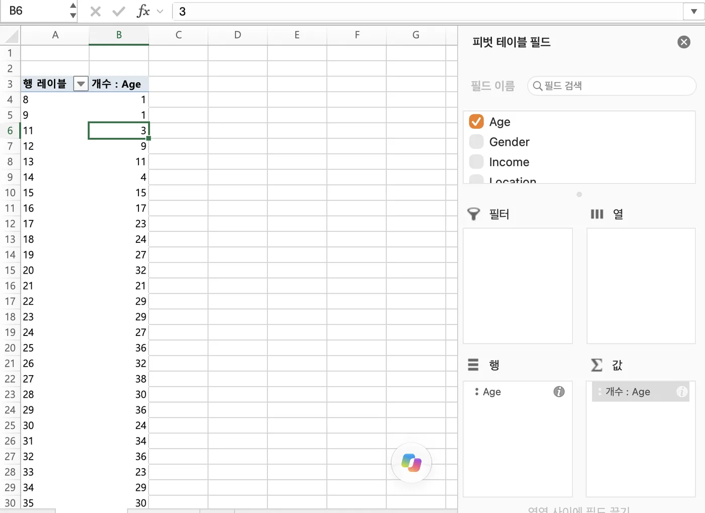
- 만들기: 데이터 안에 커서 → 삽입 → 피벗 테이블 → 범위 자동 인식 → 새 워크시트
- 필드를 행 / 열 / 값 / 필터로 끌어 넣음, 질문부터 정하고 넣을 자리를 고름
- 숫자 필드는 기본이 합계 → 값 우클릭 → 값 필드 설정 → 개수 / 평균
- 값에 제품 다섯 개를 넣었으면 다섯 개 각각 평균으로 바꿔야 함 (Bakery 요일별: 합계 그대로면 일요일 케이크 15,054처럼 나옴)
- 피벗 만들 때 새 워크시트 / 기존 워크시트 고를 수 있음, 필드는 체크만 해도 자동 배치되고 끌어도 됨
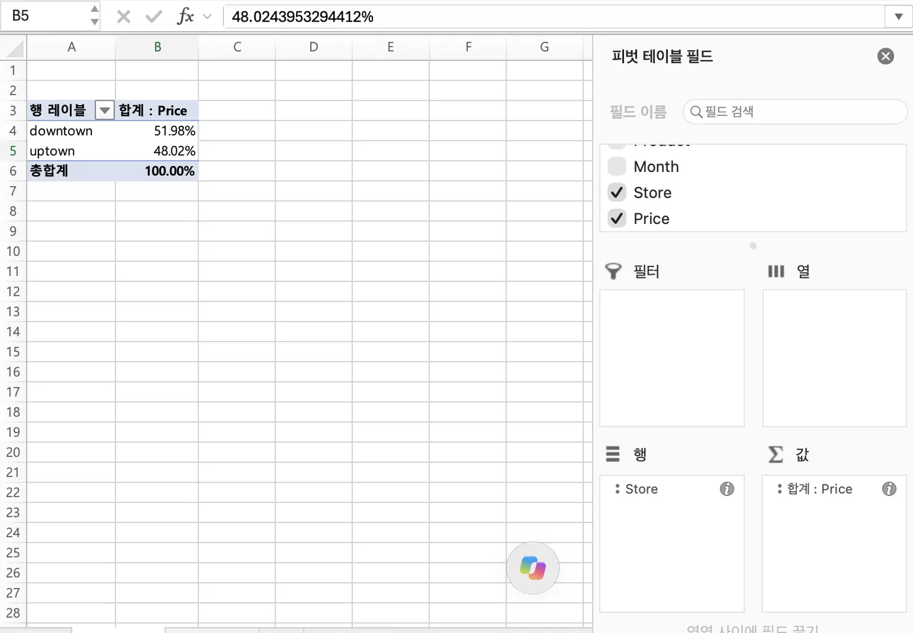
- 비율: 값 필드 설정 → 값 표시 형식 → 열 합계 비율 / 행 합계 비율
- 같은 필드를 값에 두 번 넣으면 금액과 비율을 나란히 볼 수 있음
- 비율 세 가지 구분: 열 합계 비율 (열마다 100%) / 행 합계 비율 (행마다 100%) / 총합계 비율 (표 전체가 100%) → 무엇을 분모로 할지 먼저 정하기
- 행에 필드 두 개: 행 칸에 필드를 위아래로 두 개 넣으면 조합별로 나눔 (예: Gender 아래 Location → 남·여 × 거주지 6칸), 위에 둔 필드가 바깥 그룹
- 두 번째 필드를 행 대신 열에 두면 교차표(2×2 등)가 되고, 이때 비율을 행/열/총합계 중 골라 봄
- Yes/No 같은 텍스트 필드를 값에 넣으면 자동으로 개수
- 특정 값만 보기: 그 필드를 필터 칸에 넣고 드롭다운에서 Yes만 선택 → 남은 데이터 안에서 비율이 다시 계산됨
- "무엇이 더 중요한 요인인가"류 질문: 요인을 행에, 결과(Yes/No)를 열에 두고 행 합계 비율 → 요인의 값마다 Yes 비율이 얼마나 벌어지는지 비교 (차이가 큰 쪽이 더 중요)
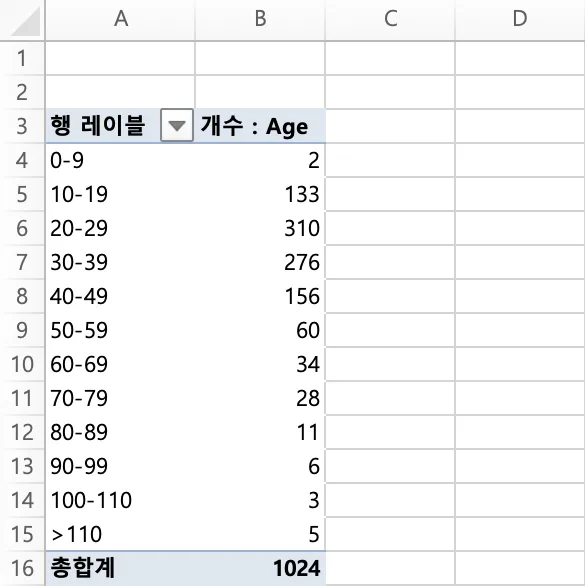
- 그룹: 행 레이블 우클릭 → 그룹 → 시작, 끝, 간격
- ESPN 나이: 시작 8, 간격 10 → 8~17, 18~27 …
- ESPN 소득: 파일 단위가 천 달러(29~259)라서 간격에 25 입력 (25000 치면 한 덩어리로 뭉침), 시작 29
- 날짜 그룹: 단위 목록에서 계절성 볼 땐 월만, 해마다 추세 볼 땐 연
- 나이를 값에 넣으면 합계로 나와서 의미 없음 → 개수로 바꾼 것
- 상위 N: 행 레이블 드롭다운 → 값 필터 → 상위 10 → 숫자를 80, 항목을 백분율로 → 매출 80% 내는 제품만
- 필터 vs 슬라이서: 필터는 뭘 골랐는지 잘 안 보임, 슬라이서는 버튼으로 남고 여러 개 선택 가능
- 슬라이서: 피벗 안에 커서 → 삽입 → 슬라이서 → 필드 체크 / 열 개수: 슬라이서 선택 → 슬라이서 탭 → 단추 → 열
| 수업 예제 | 행 | 열 | 값 |
| 매장별 매출 (PARETO) | Store | Price 합계 + 열 합계 비율 | |
| 월별 매출 | Month | Price 합계 + 비율 | |
| 월×매장 | Month | Store | Price, Product는 필터/슬라이서 |
| 프로모션 효과 (Bakery) | promotion | 제품별 평균, 요일은 슬라이서 | |
| ESPN 나이 | Age (그룹) | Age 개수, 열 합계 비율 | |
| ESPN 성별 | Gender | 개수 + 행 합계 비율 |
- 필드를 행에 놓으면 열 합계 비율, 열에 놓으면 행 합계 비율
- 프로모션 효과(%) = 프로모션 평균 ÷ 비프로모션 평균 − 1 → 교수님 결과: 평일 케이크 +14%
날짜와 조회 함수 (Bakery)
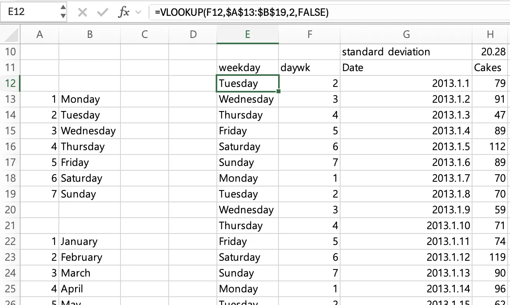
- 요일 번호:
=WEEKDAY(G12,2)→ 월=1 … 일=7 - 두 번째 인수: 1 = 일요일 1 … 토요일 7 / 2 = 월요일 1 … 일요일 7 / 3 = 월요일 0 … 일요일 6
- 요일 이름:
=VLOOKUP(F12,$A$13:$B$19,2,FALSE)→ A13:B19에 1~7과 요일 이름 표를 만들어 둠 - 월:
=MONTH(G12)→=VLOOKUP(N12,$A$22:$B$33,2,FALSE)로 월 이름
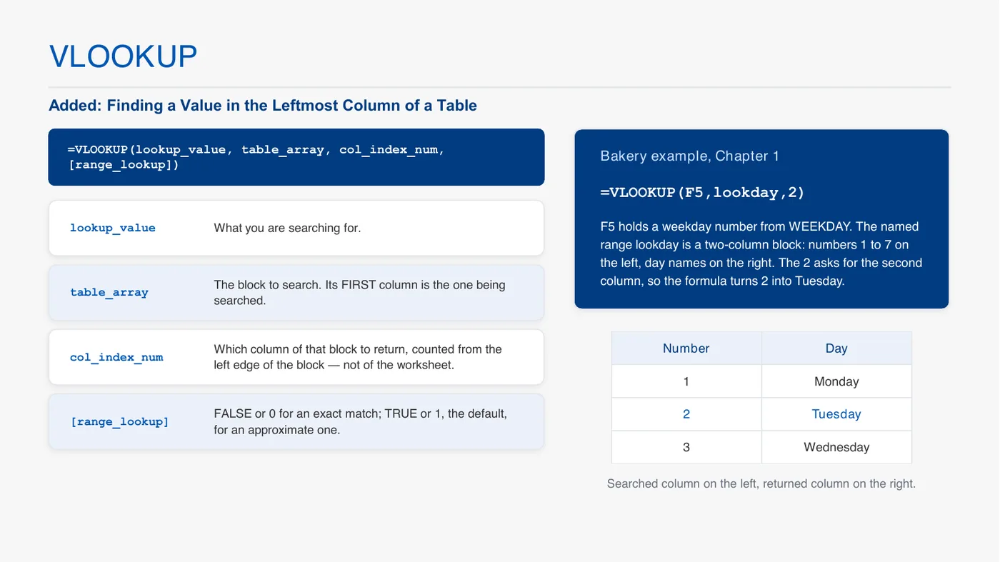
- VLOOKUP(찾을 값, 표, 몇 번째 열, FALSE): 표의 첫 열에서 찾고, 표 왼쪽부터 센 열의 값을 줌
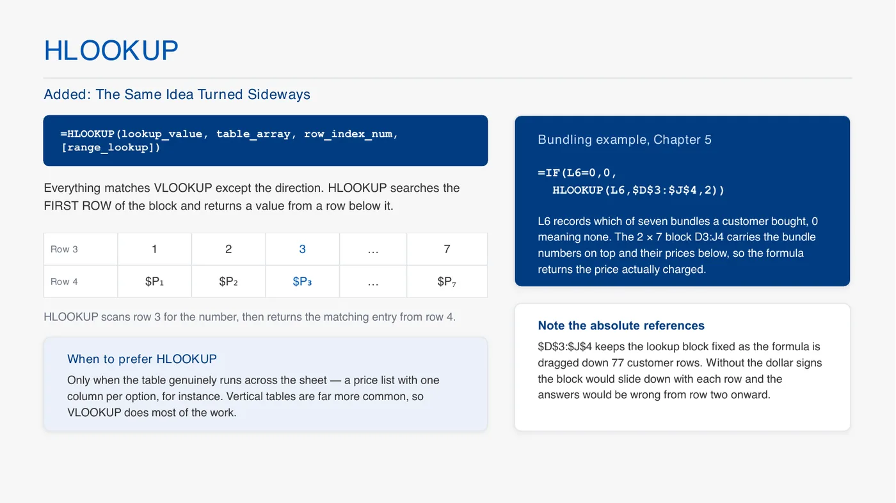
- HLOOKUP: 같은 함수인데 첫 행에서 찾고 아래 몇 번째 행 값을 줌 → 표가 가로로 놓였을 때 (Verizon 가격표)
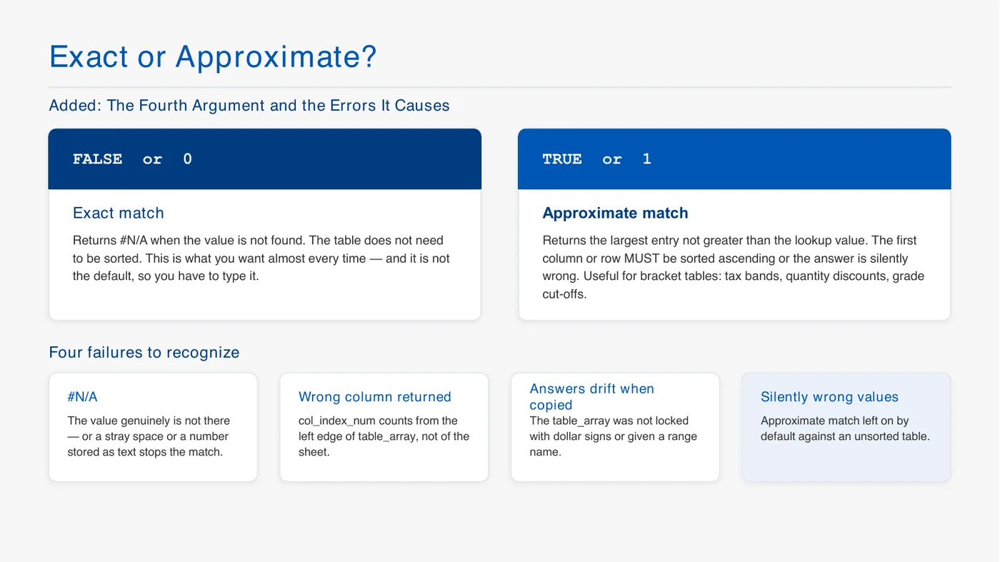
- 마지막 인수: FALSE/0 = 정확히 일치, TRUE/1 = 비슷한 값 → 교수님: "거의 항상 정확히 일치"
- 표 범위는 F4로 고정해야 아래로 끌 때 안 밀림
- MATCH(값, 범위, 0): 범위에서 몇 번째인지 →
=MATCH("Pies",$H$11:$L$11,0)= 2
- 마지막 인수: 0 = 정확히 일치 (수업은 항상 0) / 1 = 찾는 값 이하 중 가장 큰 값 (오름차순 정렬 필요) / −1 = 이상 중 가장 작은 값 / 생략하면 1 → Verizon에서 학생들 매출이 달랐던 원인
- INDEX(표, 행, 열):
=INDEX(H12:K17,2,2)→ 2행 2열 값 / 행에 0을 넣으면 그 열 전체
- MATCH, INDEX로 AVERAGEIFS 열을 고르는 식은 숙제 문제라고 함
요약 함수 (Bakery)
=AVERAGE(H12:H1106),MEDIAN,MODE,STDEV→ 오른쪽으로 끌면 다른 제품도 (이름 범위Cake로 넣으면 안 바뀜, 위 기본 조작 함정)=LARGE($H$12:$H$1106,5)→ 5번째로 큰 판매량 (케이크 148) /=SMALL(...,3)→ 3번째로 작은 값 (38)
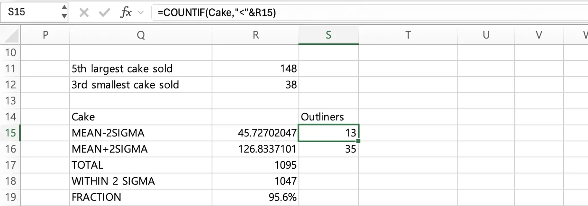
- 이상값 개수 (±2σ):
=H7-2*H10,=H7+2*H10→ 하한 45.7, 상한 126.8=COUNTIF(Cake,"<"&R15),=COUNTIF(Cake,">"&R16)→ 비교 기호는 따옴표, 셀 값은 &로 붙임=COUNT(Cake)→ 전체 1,095일, 하한 아래 13일, 상한 위 35일 → 안에 1,047일 = 95.6%- COUNTIF 연습 (수업): 프로모션 날 수
=COUNTIF($M$12:$M$1106,$Q23)(Q23에 promotion),=COUNTIF(Cake,">=120"), 이하는"<=" - 수업 파일은 라벨이 "Days sold>=122"인데 식은
">122"→>는 122 제외,>=는 122 포함 (케이크 122개 초과는 50일), 문제의 "이상/초과" 잘 보기 - 요일 일수: 월·금·토·일 156, 화·수·목 157
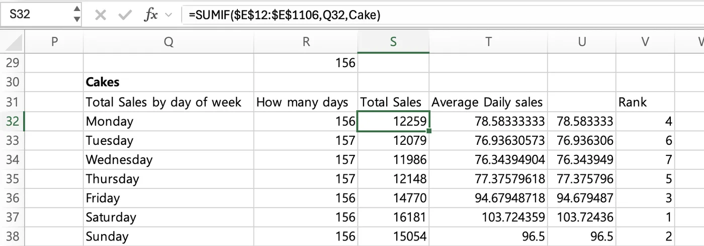
- 요일별 표 (Q32:Q38에 Monday…Sunday):
- 며칠:
=COUNTIF($E$12:$E$1106,Q32) - 총판매:
=SUMIF($E$12:$E$1106,Q32,Cake)→ 인수 순서 = 조건 범위, 조건, 더할 범위 - 평균: 총판매 ÷ 일수, 또는
=AVERAGEIF($E$12:$E$1106,Q32,Cake) - 순위:
=RANK(T32,$T$32:$T$38,0)→ 0이면 큰 값이 1등, 1이면 작은 값이 1등, 범위는 F4로 고정 - 조건 여러 개:
=COUNTIFS(E12:E1106,Q32,Cake,"<>0")→ 월요일이면서 판매 0이 아닌 날 (학생 질문에서 나옴)
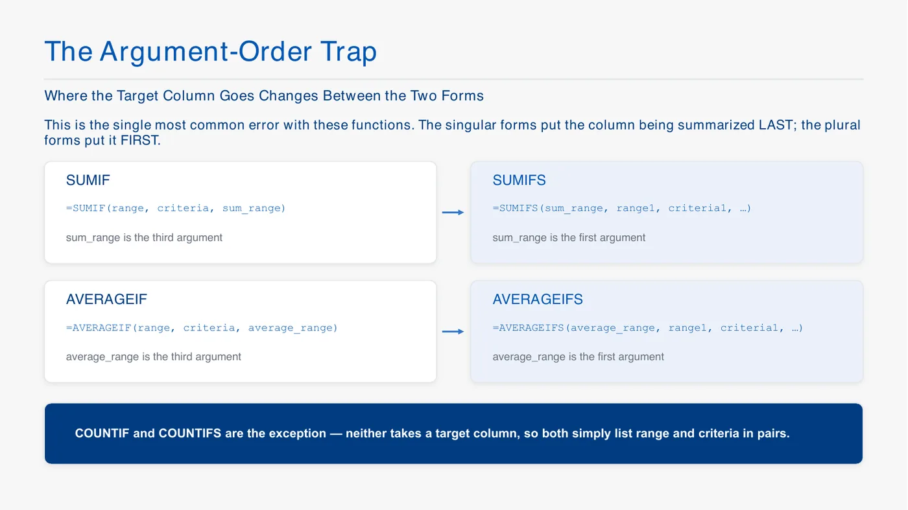
- SUMIF/AVERAGEIF는 요약 범위가 마지막, SUMIFS/AVERAGEIFS는 맨 앞
- AVERAGEIFS는 모든 범위가 같은 모양이어야 함 (여러 열짜리 표를 평균 범위로 넣으면 에러)
차트, 추세선, 목표값 찾기 (Sep 23 파일)
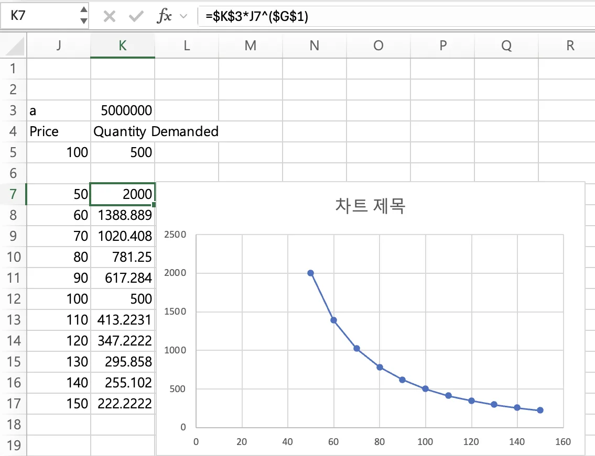
- 수요표:
=$K$3*J7^($G$1)을 가격 50~150 옆에 채우고 차트로 그린 것 (a는 아래 목표값 찾기로 구함)
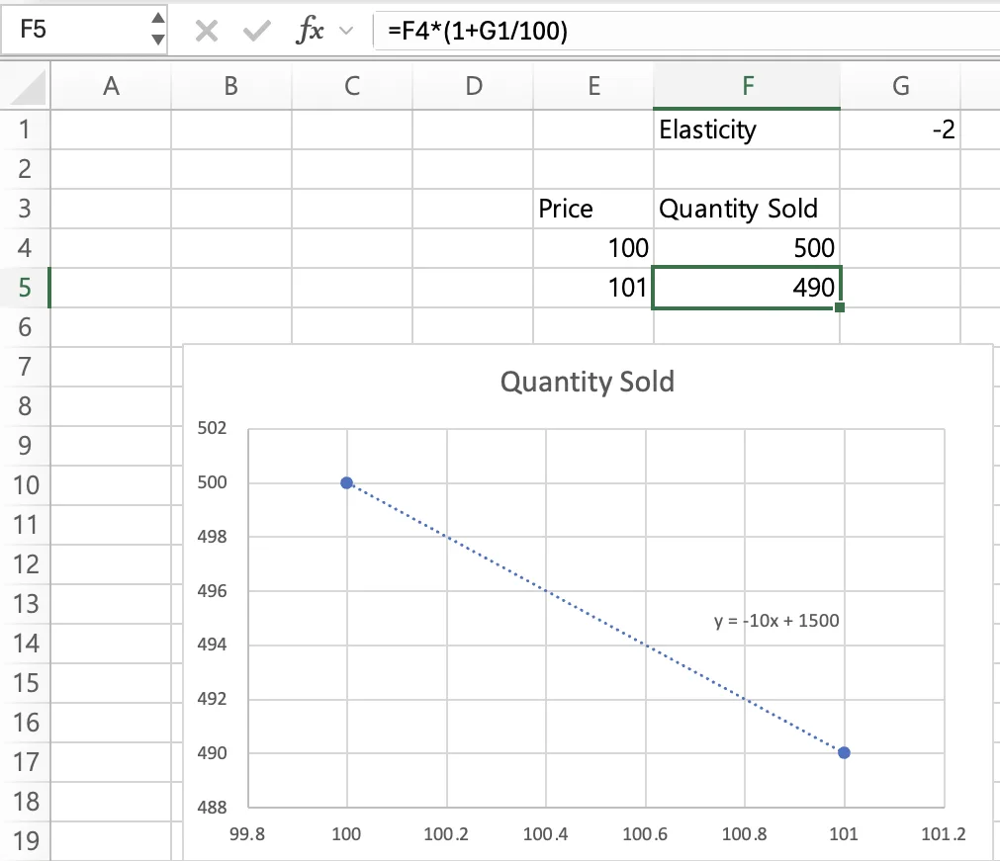
- 두 번째 점 만들기: 가격
=E4*(1+0.01), 수량=F4*(1+G1/100)(G1 = 탄력성 −2) → (100, 500), (101, 490) - 차트: 두 점 선택 → 삽입 → 추천 차트 → 분산형 (엑셀은 x = 가격, y = 수량으로 식을 보여줌 → 가격 열이 왼쪽)
- 추세선: 점 우클릭 → 추세선 추가 → 선형 → 맨 아래 차트에 수식 표시 →
- 2차 수요(ChapStick)는 추세선 종류를 다항식, 차수 2
- 추세선 종류에 거듭제곱도 있음 → 두 점으로 를 바로 보여줌 (수업에선 목표값 찾기로 함, 둘 중 하나로 다른 하나 검산 가능)
- 수요함수 두 가지 만드는 흐름 정리: 현재 (가격, 수량) + 탄력성 → 가격 1% 올린 두 번째 점 → 선형은 추세선(선형) / 거듭제곱은 b = 탄력성 넣고 목표값 찾기로 a
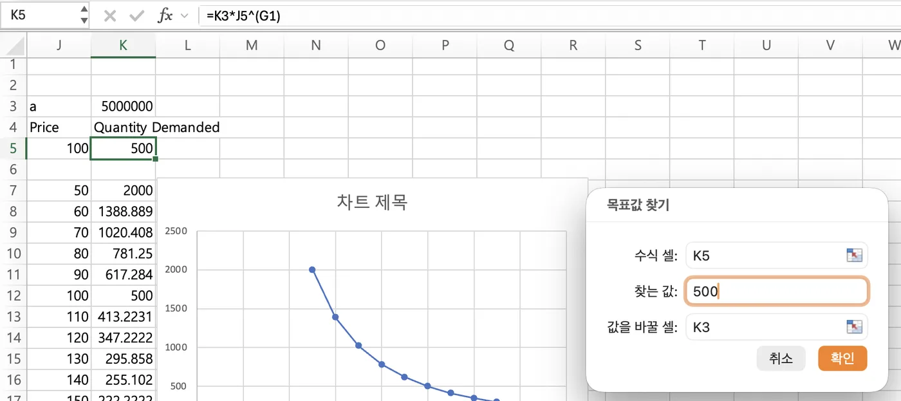
- 거듭제곱 수요 : K3에 아무 a,
=K3*J5^(G1) - 데이터 → 가상 분석 (메뉴 세 개 중 가운데) → 목표값 찾기: 수식 셀 K5, 찾는 값 500, 바꿀 셀 K3 → a = 5,000,000
- 흐름: K3에 아무 값(10) → K5가 0.001 같은 값 → 목표값 찾기로 500에 맞춤
- 선형은 곡선 따라 탄력성이 변하고, 는 탄력성이 b로 일정 → 그래서 b 자리에 탄력성을 넣음
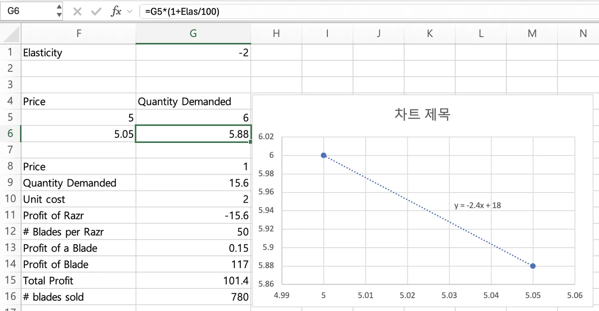
- Sheet2 (면도기): 탄력성 셀(G1)에 이름 Elas를 붙여서
=G5*(1+Elas/100)→ (5, 6), (5.05, 5.88) → 같은 방법으로 추세선
- 추세선 식을 수량 셀에 직접 입력:
G9 =18-2.4*G8→ 이게 없으면 해 찾기가 가격을 바꿔도 이익이 안 변함 (탄력성 바꾸면 추세선 새로 구해서 이 식도 다시 침, −0.3이면 )
해 찾기 (Solver)
- 설치: 파일 → 옵션 → 추가 기능 → 아래 관리 Excel 추가 기능 → 이동 → 해 찾기, 분석 도구 체크 (VBA는 안 씀)
- 위치: 데이터 탭 오른쪽 끝
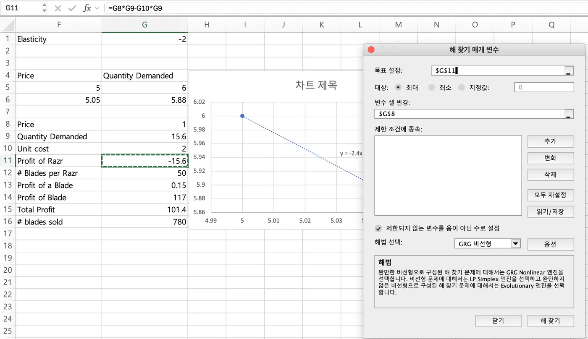
- 설정 세 가지: 목표 셀 (최대/최소/지정값) / 변수 셀 (여러 칸 가능) / 제약 (추가 버튼)
- 순서: ① 목표 설정 셀 ② 최대값 ③ 변수 셀 변경 (Verizon은 D3:J3 드래그) ④ 추가 → 셀 참조 D3:J3, <=, 100 → 추가 → >=, 0 → 확인 ⑤ "제한되지 않는 변수를 음이 아닌 수로 설정" (기본 체크) ⑥ 해법 선택 ⑦ 해 찾기 → Evolutionary는 오래 걸리니 기다림
- 해법은 문제에서 알려줌 (교수님)
- 변수 셀이 떨어져 있으면 "변수 셀 변경" 칸에 쉼표로 입력 (
$G$8,$G$20) 또는 Ctrl(맥은 Cmd) 누른 채 클릭 - 거듭제곱 수요 로 해 찾기를 돌릴 때: 가격 셀이 0이면 0의 음수 제곱이라 #DIV/0! → 가격 시작값을 현재 가격 같은 양수로 두고 돌리기, 결과가 이상하면 시작값 바꿔 한 번 더
- 선형·거듭제곱을 둘 다 묻는 문제는 수량 식만 다르고 이익 식·해 찾기 설정은 같음 → 시트를 복사해서 수량 셀만 바꾸면 됨
- "제한되지 않는 변수를 음이 아닌 수로" 체크 = 가격 ≥ 0
- 면도기: 목표 G11 최대, 변수 G8, GRG 비선형 (날 이익까지 넣을 땐 목표만 G15로)
- 퀴즈 예고 대비: 날 가격·날 원가가 따로 주어지면 날 이익 = (날 가격 − 날 원가) × 날 개수, 변수 셀 2개 (면도기 가격, 날 가격)
- 날에도 탄력성이 주어지면 날 개수도 고정값이 아니라 날 가격의 함수 → 면도기 때와 같은 방법(현재 점 + 탄력성 → 두 번째 점 → 추세선)으로 날 수요식을 만들고 그 식을 셀에 넣기
- 보완재가 "주상품 k개당 1개" 식으로 주어지면 보완재 수량 = 주상품 수량 ÷ k (면도기는 반대로 × 50)
- 이익 식은
(P−C)*Q처럼 아무 형태로 써도 됨 (교수님) - 정수 제약: 제약 추가에서 int → 단, 면도기 수요처럼 다른 셀의 함수인 셀은 정수로 못 묶음 (교수님 시연)
| 방법 | 언제 | 수업 예 |
| 단순 LP | 목표, 제약이 전부 1차식 | 1강 선형계획 (수업에선 그래프·라그랑주로만 풂) |
| GRG 비선형 | 매끄러운 비선형 | 4강 면도기 이익 (가격의 2차식) |
| Evolutionary | IF, MAX, MATCH가 들어가서 꺾이는 모형 | 5강 Verizon 묶음 |
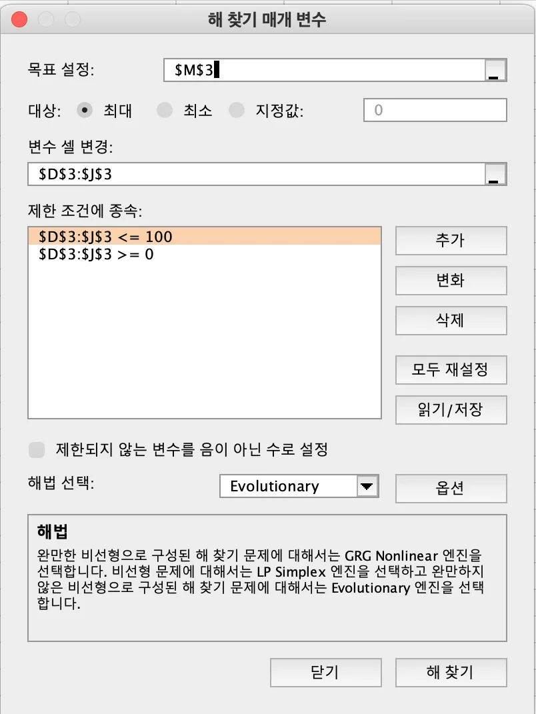
- Verizon: 목표 M3 최대, 변수 D3:J3 (7칸), 제약 ≤ 100, ≥ 0, Evolutionary
- Evolutionary는 무작위라 사람마다 가격이 조금 다름 → 총매출이 거의 같으면 정상
묶음 가격 모형 (Verizon, 5강)
- (그림은 아래 5강 "Verizon 모형", "해 찾기와 벌점" 토글)
- 구조: 고객별 WTP(A:C) → 상품별 잉여(D:J) → 최대 잉여(K) → 산 상품 번호(L) → 매출(M) → 총매출(M3)을 해 찾기로 최대
- D2:J2 = 상품 번호 1~7, D3:J3 = 가격 (변수 셀)
| 칸 | 식 | 포인트 |
| D6 (인터넷) | =A6-$D$3 |
가격 칸은 $ 고정 |
| G6 (인터넷+TV) | =(A6+B6)-$G$3 |
묶음 WTP = 단품 WTP 합 |
| J6 (셋 다) | =SUM(A6:C6)-$J$3 |
|
| K6 | =MAX(D6:J6) |
제일 큰 잉여 |
| L6 | `=IF(K6>0,MATCH(K6,D6:J6,0),0)` | MATCH 끝 0 빼먹으면 매출 틀림, 잉여 음수면 0 = 안 삼 |
| M6 | =IF(L6=0,0,HLOOKUP(L6,$D$2:$J$3,2,FALSE)) |
가로 표라 HLOOKUP, 2행 번호로 찾아 3행 가격 |
| P10 | =COUNTIF($L$6:$L$82,O10) |
상품별 산 사람 수 (O10:O17에 0~7) |
| M3 | =SUM(M6:M82) |
첫 해 찾기 목표 |
| P70, Q70 | =E3-G3, `=IF(P70<0,0,P70)` |
작은 상품 − 큰 상품 12쌍, 양수(역전)만 벌점 |
| Q82 | =SUM(Q70:Q81) |
벌점 합 |
| M3 (수정) | =SUM(M6:M82)-500*Q82 |
역전 $1당 $500 감점, 크기는 시행착오 |
- 6행만 만들고 D6:M6 선택 → 모서리 더블클릭으로 82행까지 (교수님이 끝까지 안 채워서 틀린 적 있음)
- 해 찾기: 목표 M3 최대, 변수 D3:J3, 제약 D3:J3 ≤ 100, ≥ 0, Evolutionary (IF·MAX·MATCH 때문에 꺾여서 GRG 안 됨)
- 첫 결과에서 큰 묶음이 단품보다 싸면 → 벌점 넣고 다시 돌림
- 결과 해석: 가격은 사람마다 조금 달라도 됨 (무작위), 총매출이 비슷하고 역전이 없으면 정상 / 수업 파일 매출 $3,390.97
- 잉여 = 0일 때 살지 말지, 동점일 때 어느 상품인지는 상관없음 (교수님)
면도기·날 모형 한눈에 (4강, Sep 23 Sheet2)
- (그림은 아래 4강 "면도기만 팔 때", "날 이익까지 넣으면" 토글)
| 칸 | 내용 | 식/값 |
| G1 | 탄력성 (이름 Elas) | −2 |
| F5:G6 | 두 점 | (5, 6), =F5*(1+0.01), =G5*(1+Elas/100) |
| G8 | 면도기 가격 (변수 셀) | 아무 값 |
| G9 | 수량 (백만) | =18-2.4*G8 (추세선 식) |
| G10 | 원가 | 2 |
| G11 | 면도기 이익 | =G8*G9-G10*G9 |
| G12, G13 | 면도기당 날, 날 1개 이익 | 50, 0.15 |
| G14 | 날 이익 | =G13*G12*G9 |
| G15 | 총이익 | =G11+G14 |
| G16 | 날 판매 | =G9*G12 |
- 해 찾기 GRG: 목표 G11 → $4.75 / 목표 G15 → $1.00 (총이익 $101.4M)
엑셀 메뉴 한글 이름
| 수업 (영어) | 한글 엑셀 |
| Value Field Settings | 값 필드 설정 |
| Show Values As → % of Column Total | 값 표시 형식 → 열 합계 비율 (% of Row Total = 행 합계 비율, % of Grand Total = 총합계 비율) |
| Group / Slicer | 그룹 / 슬라이서 |
| Add Trendline, Display Equation on chart | 추세선 추가, 차트에 수식 표시 |
| What-If Analysis → Goal Seek | 가상 분석 → 목표값 찾기 |
| Solver, GRG Nonlinear | 해 찾기, GRG 비선형 |
| Name Box | 이름 상자 |